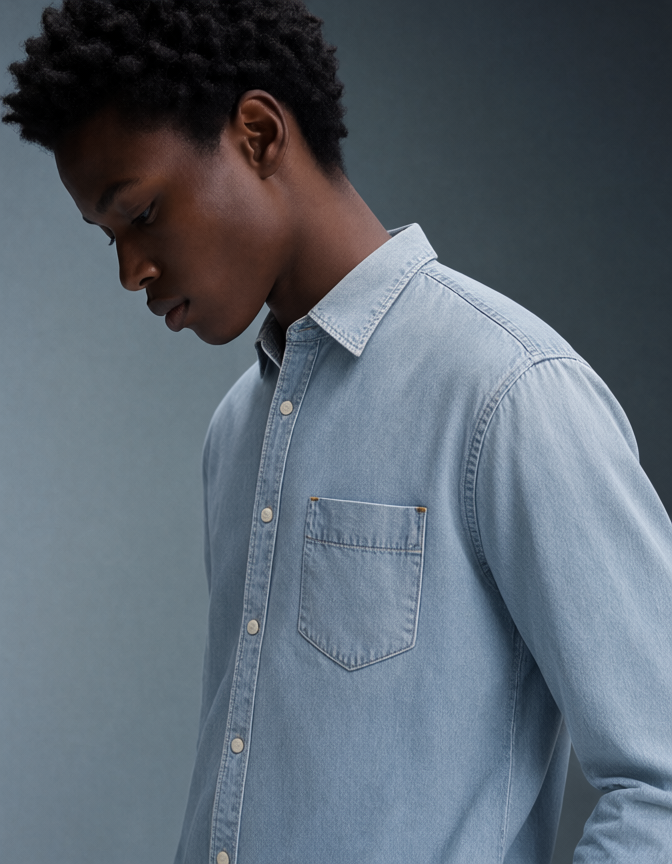
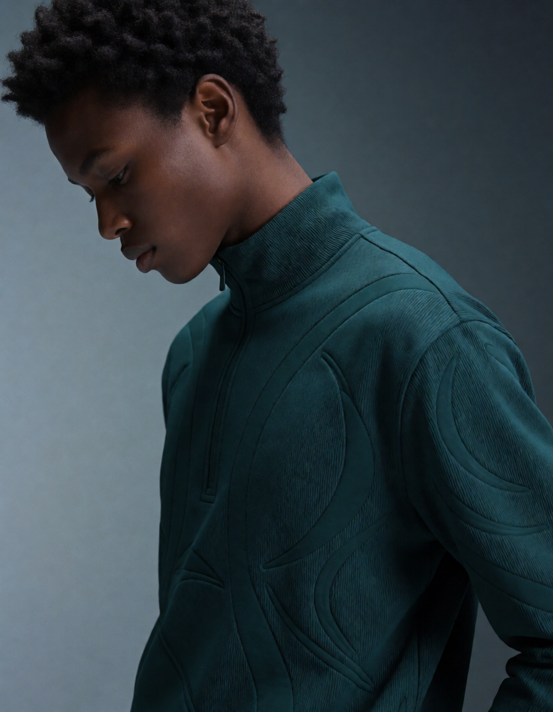
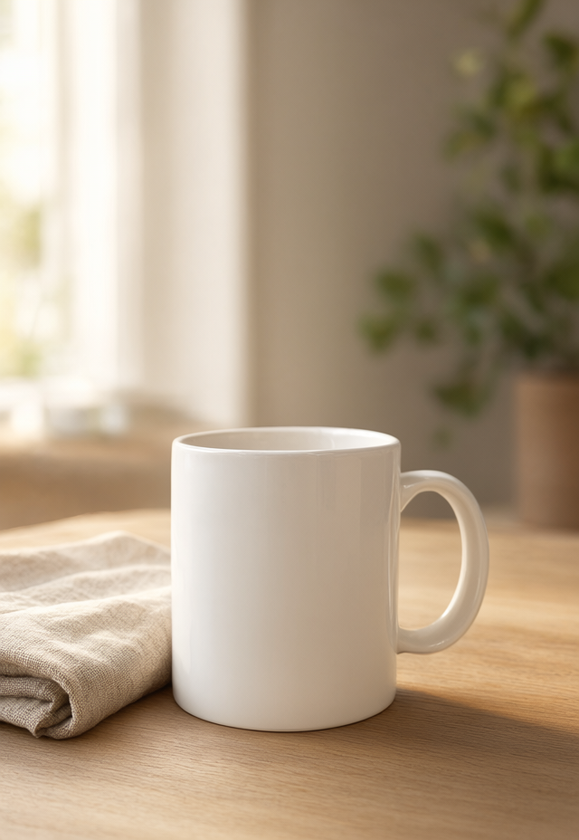
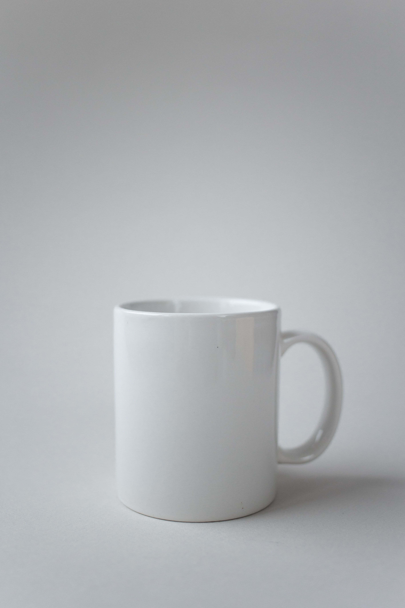
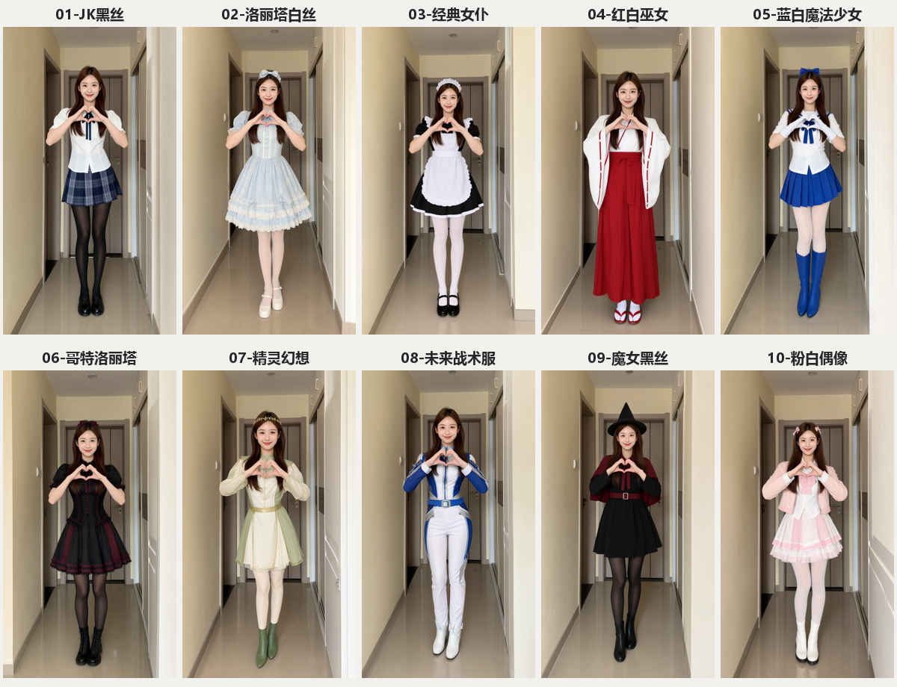

模特参考图换装
多图参考编辑

换装前换装后↔人物图 + 衣服参考图 → 换装结果
尽量保留脸、姿势与背景，迁移衬衫颜色、领口、纽扣和口袋。672 × 864 · 25 步 · 26.7 秒。
尽量保留脸、姿势与背景，迁移衬衫颜色、领口、纽扣和口袋。672 × 864 · 25 步 · 26.7 秒。
基于 ComfyUI 的本地生成式 AI 实践：从模特换装、产品场景编辑，到角色视频与配音。保留输入、提示词、工作流和运行记录，让每个展示都有可核对的产物。
鼠标在图上左右移动，或用手指拖动分界线。左侧为编辑前，右侧为本地模型生成的结果。


换装前换装后↔

原图场景编辑后↔滑动分界线是展示控件；两张完整图分别来自编辑前后。此处测时为单次本机工作流记录，不是统一基准测试。查看运行记录 ↗
用 Qwen Image 2.1 生成同一成年模特的服装变体，再用 MiniMax H3 生成动作，最后完成剪辑、字幕与配乐。
十段动态片段，每套约 3 秒，合成为 720 帧、24fps 的 30 秒视频。视频原生分辨率为 352 × 608，动作重新生成，局部面部和手部可能出现漂移。
查看十套造型及生成记录 ↗
配置 ComfyUI、量化模型与运行环境，在 16GB 显存设备完成图像和视频生成。
通过 Python 与 ComfyUI API 编排提示词、输入、采样和输出，保留可导入工作流。
完成片段合成、字幕、转场、音轨替换；探索人声分离与少样本角色声线试配。
以 Git 管理成果和配置，记录任务状态、参数、文件校验值，并提供 AI 项目入口。
基于 ComfyUI、Qwen Image 2.1、MiniMax H3 与 Qwen3-TTS，搭建覆盖图像编辑、视频生成和配音后期的本地实验流程。
模型来自官方或项目公开发行版本，本项目展示本地部署与应用实践，不主张原创训练这些基础模型。图像换装展示视觉近似效果，不用于服装尺码测量。运行记录为事后整理的本地实验档案。模特与服装样例来源 Comfy-Org，水杯照片来源 KATRIN BOLOVTSOVA / Pexels。详见仓库的来源和实验限制说明。